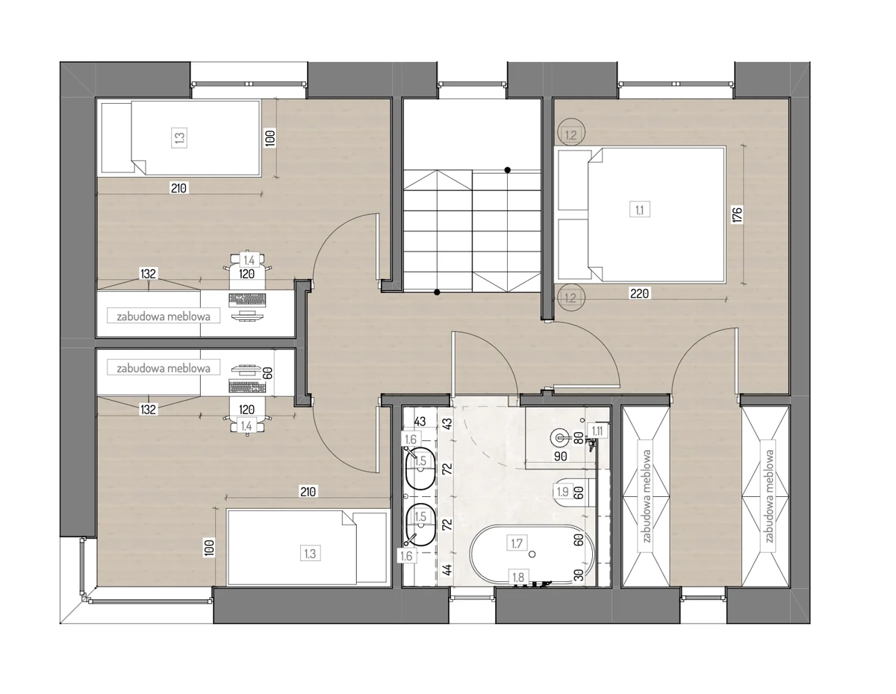

MAJDAN / PIERWSZY GEST
Rytuałwejścia
Spokojna linia zabudowy. Ciepło drewna. Miękki akcent zieleni. Wnętrze wita, zanim zdążysz się rozgościć.
 MAJDAN / DOM PRYWATNY
MAJDAN / DOM PRYWATNYMAJDAN / PIERWSZY GEST
Spokojna linia zabudowy. Ciepło drewna. Miękki akcent zieleni. Wnętrze wita, zanim zdążysz się rozgościć.
ZA GOTOWYM KADREM
Każda przestrzeń zaczyna się od pomysłu. Później przychodzą decyzje, rysunki i praca z materią. Zobacz, jak kolejne kroki prowadzą do gotowego wnętrza.

01 / IDEA I UKŁAD FUNKCJONALNY
Zaczynamy od rozmowy o potrzebach i analizy przestrzeni. Na rzucie sprawdzamy układ pomieszczeń, ustawienie mebli, przejścia i miejsca do przechowywania. To fundament wszystkich późniejszych decyzji.
02 / KONCEPCJA I WIZUALIZACJE
Układ zyskuje formę, proporcje i światło. Wizualizacje pomagają zobaczyć wnętrze jako całość, porównać rozwiązania i dopracować kierunek, zanim rozpoczną się prace.
03 / WYBÓR MATERIAŁÓW
Zestawiamy próbki drewna, ceramiki, tkanin i kolorów. Sprawdzamy je obok siebie i w świetle wnętrza. Dopiero takie spotkanie pokazuje, czy paleta naprawdę tworzy spójną całość.
04 / PROJEKT WYKONAWCZY
Koncepcję zamieniamy w dokumentację: rzuty, rozwinięcia ścian, układ instalacji i detale zabudowy. Rysunki opisują to, co wykonawcy muszą wiedzieć, aby odtworzyć uzgodniony projekt.
05 / PLANOWANIE PRAC
Przed wejściem ekip porządkujemy kolejność robót, ustalenia z wykonawcami i terminy zamówień. Tak powstaje plan, który łączy dokumentację, dostępność materiałów i realia budowy.
06 / REMONT I REALIZACJA
Rysunki spotykają się z rzeczywistością. Instalacje, okładziny i zabudowy powstają w zaplanowanej kolejności. To etap weryfikacji detali i rozwiązywania pytań, które pojawiają się podczas prac.
07 / ODBIÓR KOŃCOWY
Sprawdzamy zgodność wykonania z projektem, działanie wyposażenia i jakość detali. Zapisujemy elementy do dopracowania i porządkujemy końcowe ustalenia, aby zamknąć realizację w przemyślany sposób.
TERAZ TWOJA HISTORIA